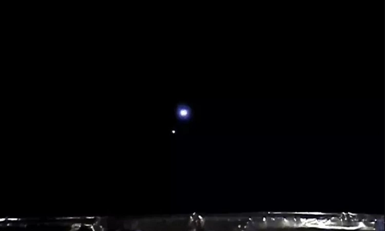

×
🌍 Trái Đất - Hành tinh số 3

🌍"Viên ngọc xanh" chụp từ khoảng cách 1,6 triệu km
Vệ tinh DSCOVR ghi lại hiện tượng "Mặt Trăng đi ngang Trái Đất" năm 2016
📊 Đặc điểm khoa học:
- Bán kính: 6.371 km
- Khí quyển: 78% N₂, 21% O₂
- Nước: 71% bề mặt (97.5% là nước mặn)
- Vệ tinh tự nhiên: Mặt Trăng (đường kính 3.474 km)
🔍 Fun Facts:
- Nhận 174 petawatt năng lượng Mặt Trời mỗi giây
- Mỗi ngày có 100 tấn bụi vũ trụ rơi xuống
- Châu Nam Cực là sa mạc lớn nhất thế giới